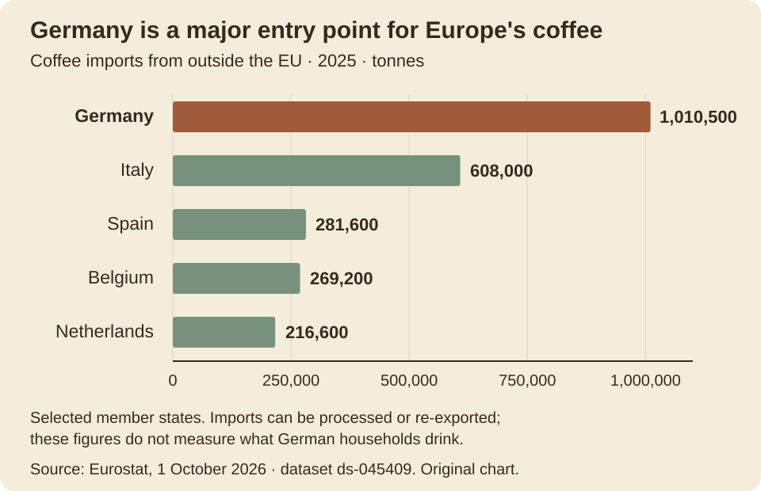
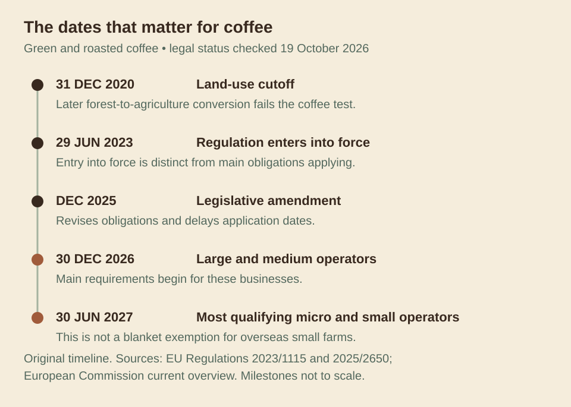
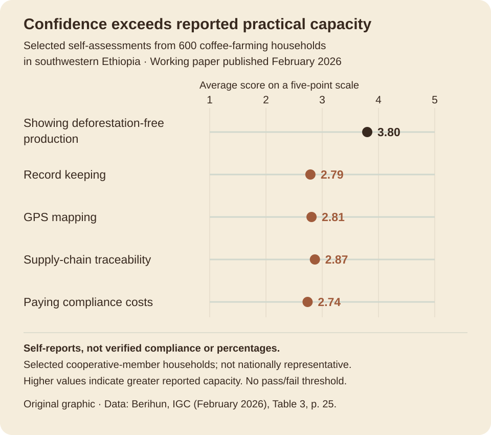
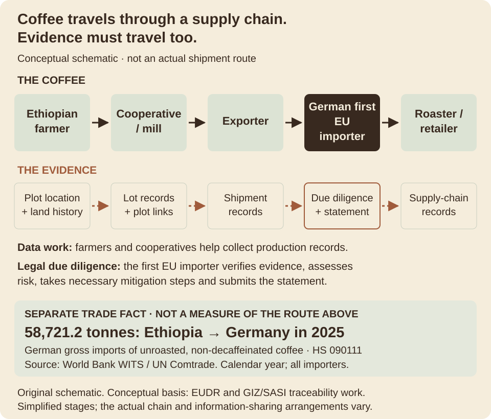
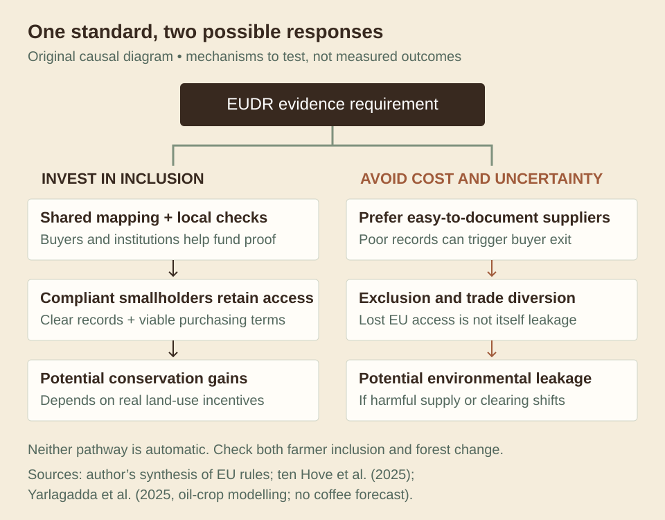

Introduction · The question behind the cup
Your morning coffee carries a question that its flavour cannot answer: was a forest cleared to grow it? Europe is preparing to make that question a condition of market access. But another question belongs beside it: who can afford to prove the answer?
The European Union Deforestation Regulation, or EUDR, seeks to keep products linked to recent deforestation out of the European market. Coffee is among its covered commodities. Its promise is appealing: consumers should not have to choose between enjoying a familiar drink and protecting distant forests. Yet a farmer can preserve trees and still lack the records a buyer needs.
This blog follows the relationship between Ethiopia, a developing-country coffee producer, and Germany, a developed-country importing and processing hub. The central argument is that the EUDR can improve the environmental performance of coffee trade, but durable, fair gains depend on matching its demand for proof with investment in smallholders’ ability to provide it and incentives to conserve forests. European buyers and public institutions should finance shared traceability, support credible local verification and reward continued forest stewardship. Otherwise, compliance may favour suppliers with better paperwork while leaving the drivers of forest loss intact.
This is an assessment before the main obligations begin, using evidence available on 19 October 2026. Observed production patterns, survey responses and funded projects can reveal weaknesses in preparation. They cannot yet tell us how much deforestation the fully applied regulation will prevent.
01 · Two countries, one connected problem
Why Ethiopia and Germany?
Ethiopia makes the smallholder question impossible to dismiss. A May 2026 USDA assessment, citing the Ethiopian Coffee and Tea Authority, reports about 5.9 million coffee farmers. It estimates that smallholders produce roughly 90% of the country’s coffee, typically on plots averaging less than half a hectare. A system that works only for large, easily documented estates would therefore miss much of the sector.
Germany represents the market through which European rules can influence overseas production. According to Eurostat’s October 2026 release, it accounted for 34% of the EU’s coffee imports from outside the bloc in 2025. These imports make Germany an important gateway; they are not a measure of German household consumption because coffee can be processed and sold onward.
The connection is tangible. UN Comtrade data presented by the World Bank’s WITS platform record 58,721.2 tonnes of unroasted, non-decaffeinated coffee imported by Germany from Ethiopia in 2025. That figure establishes a real trading relationship. It does not identify individual farms, reveal their earnings or establish that changes in trade were caused by the EUDR.
Viewed from the exporting side, USDA’s trade table puts Germany at 15.2% of Ethiopian coffee export volume in marketing year 2024/25, making it the second-largest destination. This October–September period differs from the calendar-year import data above. The two series should not be combined as if they measured the same flow over the same dates. Together they show why this relationship matters to both countries without claiming that the two sides depend on it equally.
The comparison is deliberately between two positions in a supply chain, rather than two equivalent agricultural economies. Ethiopian farmers face the land-use choices and much of the practical work of documenting production. German importers make purchasing decisions and face European market-entry obligations. Following their connection reveals how a rule adopted in one place can reorganise work, costs and opportunities in another.
Germany is Europe’s largest coffee import gateway

02 · What the rule actually requires
A forest rule becomes a test of evidence
Under Article 3 of the regulation, covered coffee must be deforestation-free, produced legally under the relevant rules of its country of production, and covered by the required declaration. For coffee, the key environmental test is whether the producing land was converted from forest to agricultural use after 31 December 2020. “Deforestation-free” therefore has a specific legal meaning. It does not mean the land was never forest, or that the coffee has no carbon footprint.
As explained in the Commission’s due-diligence guidance, operators collect information, assess risk and, where necessary, reduce it to a negligible level before placing products on the market. Traceability connects a batch to its origin; geolocation identifies the producing plot. The law requires a polygon for non-cattle plots larger than four hectares, while a coordinate point can suffice for plots of four hectares or less. The problem is consequently broader than buying sophisticated mapping equipment: even a simple coordinate must be reliable and connected to the right coffee.
Who carries the legal obligation matters. Under the current allocation of responsibilities, the first operator placing coffee on the EU market, typically the importer, conducts due diligence and submits the statement. A farmer supplying an Ethiopian cooperative is not automatically an EU operator. Downstream traders and roasters generally retain relevant records rather than submitting a new statement for every transaction; a roaster importing directly may itself be the first operator.
The current application dates are 30 December 2026 for large and medium operators and 30 June 2027 for most qualifying micro and small operators. These business categories do not grant every overseas smallholder an extra six months: a farmer selling through a large importer may need the evidence earlier. This article focuses on green and roasted coffee; newly added soluble-coffee products have a later application date.
The cutoff is different from the start date

03 · Why intervention is justified
The environmental case is real
International trade can separate consumption from environmental damage. A European customer buys beans; the ecological cost of clearing land remains with the producing landscape. Market prices need not pay for lost habitat or the carbon released by conversion. In the language of environmental economics, these are external costs.
The wider agricultural connection is substantial. FAO’s global remote-sensing assessment found that agricultural expansion caused almost 90% of deforestation during 2000–2018. This is a statistic about agriculture overall, not coffee’s individual contribution. It explains why regulating commodity supply chains can be relevant without implying that every coffee farm is a forest threat.
A mandatory rule can strengthen the position of producers already protecting forests: competitors should no longer gain European sales by expanding onto recently cleared land. It can also motivate importers to understand suppliers beyond the export warehouse. Those are plausible improvements over relying only on consumers to recognise sustainability labels.
Week 3’s discussion of international trade and environmental protection provides the central lens: a large consumer market can transmit environmental requirements through global value chains. The difficult question is what follows that transmission. Better monitoring could improve production practices. Alternatively, buyers could reorganise sourcing around whoever is easiest to document. Both responses could make an importer’s records look cleaner, but their consequences for farmers and forests differ.
04 · The Ethiopian smallholder test
Having a sustainable farm is not the same as having proof
Picture a small farm whose coffee is collected alongside beans from many neighbours. This is an illustrative scenario, not an interview. Knowing the farmer’s location solves only the first problem. The collector must keep that origin connected to deliveries, the processor must preserve the link through handling, and the exporter must assemble credible evidence for the buyer. One missing connection can create doubt about an entire batch.
A 2025 study of Ethiopia’s coffee value chain identifies information, product, market and procedural barriers to EUDR readiness. Its distinction between trading channels is important: cooperative and more integrated channels can have stronger traceability arrangements. Smallholders are not a uniform category. Membership, buyer relationships and existing records can shape whether a farmer receives support or faces another requirement alone.
There is also direct evidence of uneven preparedness. A February 2026 IGC working paper surveyed 600 cooperative-member households in selected districts of southwestern Ethiopia. On a five-point self-report scale, respondents rated their ability to demonstrate deforestation-free production at 3.80, but GPS mapping at 2.81 and managing compliance costs at 2.74. These are perceptions, not independently verified compliance scores. The sample is not nationally representative. Still, the gap illustrates why confidence about a farm’s environmental history cannot substitute for operational capacity.
Confidence about the farm exceeds practical capacity

The European Forest Institute’s preparedness assessment, based on a July 2024 mission, provides a concrete cost example: interviewed cooperatives reported at least €2–4 per geolocation point, before potentially larger indirect expenses such as training. This is a reported mapping cost from that assessment, not a current national average or a complete compliance bill. EFI also explains that collecting beans together need not destroy traceability if the supplying plots are known and checked. The challenge is preserving a credible connection to all contributing origins, not keeping every farmer’s beans in a separate bag forever.
The hidden costs have several layers. Mapping requires time and sometimes travel. Maintaining records requires repeated work after the initial survey. Keeping batches identifiable can alter storage and purchasing practices. Correcting disputed information can take time during which a farmer needs cash. Even when no invoice says “EUDR fee”, a smaller payment, delayed purchase or lost buyer could shift the burden upstream. These are possible channels of cost transfer, not a claim that the law instructs farmers to pay.
Fixed costs create another unequal pressure. A buyer can spread the cost of checking one large supplier across substantial volumes. Organising evidence from hundreds of small suppliers may require more coordination. The resulting incentive is to prefer documentation that is cheap to obtain. Unless support changes that calculation, commercial convenience can become an unintended selection rule.
Existing sustainability certification can supply useful records, but it is not an automatic EUDR passport. The importer remains responsible for assessing the evidence. A certified farm is not necessarily fully prepared, just as a farmer without a label is not necessarily damaging forests.
Ethiopia is responding. Its Agricultural Transformation Institute reported a June 2026 consultation on coffee traceability, including interoperability gaps and institutional arrangements. That matters because a national system could reduce duplication between buyers. A consultation, however, is evidence of preparation, not proof that every farmer has been registered or every shipment can already be verified.
05 · The German buyer test
Legal responsibility does not settle who pays
Germany’s role is more than that of a wealthy coffee drinker. Its importers sit at a decision point: help suppliers produce the evidence or purchase from suppliers who already have it. Germany’s federal ministry identifies the Federal Office for Agriculture and Food, BLE, as the designated EUDR authority. The regulation is an EU measure; Germany’s role includes national enforcement and support for implementation.
The course’s structural perspective asks who gains and where burdens fall. Here, a shared environmental objective meets unequal access to finance, information and bargaining power. The importer’s legal duty does not prevent it from asking suppliers to deliver compliant records at their own expense. Equally, that duty gives the importer a reason to invest in dependable relationships and shared information systems.
The legal obligation and the data work sit in different places

German businesses are already testing collective responses. In April 2026, Tchibo and Neumann Kaffee Gruppe joined the Coffee Canopy Partnership, whose East African pilot includes Ethiopia. The announced approach combines satellite imagery and field verification to improve coffee maps. It shows buyers participating in shared evidence-building. However, a partnership announcement is not an impact evaluation: coverage, correction procedures and farmers’ continued market access still need independent assessment.
There are practical foundations for the second response. A SASI-supported Ethiopian coffee partnership, listed for December 2022–May 2026, combined agroforestry training, digital traceability and premium payments. Its stated target was 11,000 smallholder families, with €3.56 million in total funding, including €1.78 million from the private sector. SASI receives German development funding, but the named European commercial partners in this project are Dutch. It is evidence of a German-supported cooperation approach, not a German importer’s completed EUDR programme. Targets and budgets do not establish achieved income or forest benefits.
More recently, Germany’s BMZ-commissioned TASC programme lists a €16 million commitment for 2026–2031 and includes support for digital public infrastructure. This is a global, multi-commodity programme, not an allocation reserved for Ethiopian coffee. Its relevance is the institutional possibility: German support can help build reusable systems rather than make each supplier solve the same problem separately.
The EU’s country-risk classifications add a useful distinction: Ethiopia is standard risk and Germany low risk, but the relevant origin is where the coffee was produced. Ethiopian beans do not become low-risk coffee simply by entering through Germany. Buyers still need an appropriate assessment of their Ethiopian supply. This makes investment in credible origin information more useful than relying on the importer’s address.
German firms also differ in size and capacity. A small roaster may struggle with administration, especially if importing directly. Shared services could reduce its costs too. The useful distinction is therefore between business models that finance inclusion and those that offload costs, rather than assuming every European company is powerful or every Ethiopian producer is powerless.
06 · When the satellite sees the wrong thing
A greener-looking farm can be harder to classify
Coffee grown beneath trees presents an awkward challenge for a forest rule. From above, a long-established coffee agroforestry plot may resemble forest. The regulation’s definitions distinguish agricultural plantations, including crops under tree cover, from forest. Existing shade-grown coffee is therefore not automatically prohibited. What matters includes prior land use and when any conversion occurred.
Research makes the classification problem concrete. Gallemore and colleagues’ 2025 study compared five global land-cover datasets with ground-truth information from coffee-growing areas in Ethiopia and Tanzania. It found substantial misclassification in some locations, particularly where shade or agroforestry coffee was labelled forest. The authors argue for regional, commodity-specific data and producer participation in improving monitoring.
A classification error does not by itself establish a false finding of recent deforestation: identifying land cover and detecting change are different tasks. Nevertheless, uncertainty can make proving historical land use harder. If a buyer avoids an uncertain plot instead of investigating it, the economic effect may resemble a rejection even when no regulator has found an infringement.
The answer is not to abandon satellite monitoring or assume that all shade coffee is environmentally harmless. It is to combine remote observations with local knowledge and an accessible correction process. A farmer should be able to challenge the underlying evidence before losing a buyer. Paying local cooperatives to validate maps would recognise that reliable environmental information is work, not a free resource waiting to be extracted.
07 · A clean import ledger or healthier forests?
Trade can move without the problem disappearing
The strongest objection to the argument is straightforward: a demanding standard will inevitably exclude some suppliers, and that is partly its purpose. Coffee from newly deforested land should not gain entry simply because compliance is inconvenient. Lowering the environmental threshold could undermine producers who have already protected forests.
But two situations must be distinguished. Excluding a shipment because credible evidence shows prohibited conversion can strengthen conservation incentives. Excluding a farmer because a correctable documentation gap makes purchasing inconvenient may achieve much less. Supporting evidence collection preserves the environmental threshold while reducing avoidable exclusion.
A Wageningen study of anticipated EUDR impacts, using Ethiopian and Cameroonian cases, sets out the steps connecting due diligence to changes in farmer behaviour. Its interview-based analysis highlights infrastructure and traceability constraints. The lesson is that checking an import is only one step in a longer causal chain. Poverty, incentives to expand production and local institutions still influence land use.
Consider two possible responses. A supported cooperative maps its members, verifies land-use history and retains buyers; dependable income can make forest-compatible production more attractive. An unsupported supplier instead loses European customers and seeks another destination. That is trade diversion and possible exclusion. Environmental leakage is a further possibility: if deforestation-linked coffee finds buyers in unrestricted markets, or clearing shifts elsewhere, Europe’s exposure could fall without equivalent global gains. Rerouting already compliant coffee alone proves neither leakage nor forest protection.
Inclusion and forest protection must both be tested

Leakage is a risk, not an established outcome for Ethiopian coffee. A 2025 modelling study of palm oil and soy shows how rerouting and production responses can weaken the benefits of import restrictions. It cannot quantify coffee leakage: commodities have different markets and production systems. UNCTAD’s analysis also stresses the importance of the EU’s market share, which gives coffee regulations considerable influence. Switching buyers is not necessarily easy or equally profitable.
Calling the EUDR simply “green protectionism” therefore goes too far. Its environmental objective is legitimate, and the rules cover relevant domestic production as well as imports. Yet a formally common standard can still become a practical barrier when evidence costs differ sharply. Fairness should be assessed through access, cost-sharing and ecological outcomes, rather than inferred from either the law’s intentions or its critics’ labels.
08 · What a fairer implementation would do
Keep the forest standard. Build the ability to meet it.
First, finance shared evidence systems before demanding complete records. German buyers, European development programmes and Ethiopian institutions should jointly support mapping, record maintenance and verification. The ECTA–GIZ/SASI FIT for FAIR process already produced recommendations for national traceability guidance, richer databases and aligned land-use definitions. The next challenge is implementation with clear responsibilities and durable funding. A database launch is not enough if cooperatives cannot afford to maintain it.
Second, make procurement contracts carry part of the solution. Buyers should specify who pays for initial mapping, routine updates and disputed cases. Longer purchasing commitments can make cooperative investment less risky. A documented service payment can be easier to audit than a vague promise of a sustainability premium. Support should include farmers outside well-organised cooperatives; otherwise, programmes may repeatedly benefit those already easiest to reach.
Third, treat data access and correction as farmer protections. Farmers need understandable explanations of how their information will be used, a copy of their records and a practical route to correct mistakes. Portable records could prevent dependence on one buyer’s proprietary platform. GIZ/SASI’s open-source INATrace approach demonstrates that cooperative data ownership can be built into traceability design, although its cited pilots do not establish national deployment in Ethiopia. Free software still requires training, maintenance and trusted institutions.
Fourth, connect compliance to forest stewardship beyond the shipment. Mapping should be accompanied by support for appropriate agroforestry, viable farm incomes and local land-use governance. Assistance must not excuse new clearing. Instead, it should make the forest-compatible choice economically workable. Producer organisations should participate in setting priorities because they understand constraints that a distant buyer’s checklist may miss.
These proposals involve trade-offs. Public funding can subsidise services that businesses might otherwise pay for; private finance can create dependence on a particular buyer. Joint systems need transparent budgets, independent checks and producer representation to manage those risks. Support should be judged by whether it enables credible compliance and continued market access, rather than by how many training sessions it delivers.
Success also needs a broader scorecard. Track smallholder retention, the costs farmers actually bear, farmgate returns, correction times and independently verified forest change. Compare supported and otherwise similar communities over time, accounting for coffee prices, weather and other policies. A fall in German imports from Ethiopia would not alone prove environmental progress; an increase would not alone prove harm. The central outcome is less forest conversion alongside viable participation by farmers who meet the standard.
Conclusion
Proof should protect forests—and the people keeping them standing
The EUDR asks a necessary question about Europe’s coffee: what happened to the land where it was grown? Ethiopia and Germany show why the answer cannot be reduced to a satellite coordinate or a completed form. Environmental rules operate through relationships with unequal resources and negotiating power.
A credible zero-deforestation policy should exclude prohibited conversion while helping compliant smallholders demonstrate what they already do. That requires European purchasing power to fund shared verification, fairer contracts and accessible correction, alongside Ethiopian institutional capacity and farmer participation.
Coffee can become more credibly deforestation-free. But a cleaner European supply chain will contribute more to global forest protection when the people growing the beans can afford to remain within it. The test is not merely whether Europe receives better-documented coffee. It is whether forests survive and small farmers retain a viable place in the trade.
Evidence & transparency
References and data notes
All online sources accessed 19 October 2026. Links in the article lead directly to supporting sources. Original figures were prepared for this blog; statistical charts use the cited data, while diagrams describe conditional mechanisms. No stock photographs or reproduced research figures are used.
- EU Deforestation Regulation and Ethiopian Smallholder Coffee Farmers: Awareness, Compliance Capacity, and Potential Impacts. IGC Working Paper ETH-24325, February; Table 3, printed p. 25.Working paper; self-reported survey of 600 households, not nationally representative
- Coffee Canopy Partnership. Press release, 22 April.Company-hosted partnership announcement; not an independent impact evaluation
- Transforming Agricultural Supply Chains (TASC). Updated October.Official project description; global multi-commodity commitment
- ATI Conducts Stakeholders Consultations Workshop on Coffee Traceability. 13 June.Government institute report on implementation preparation
- Commission updates product scope and tools to support EUDR. 13 July.Official update
- Guidance document for Regulation (EU) 2023/1115. OJ C/2026/3896.Official guidance; certification and third-party verification
- Country classification list.Official EUDR country-risk classifications
- Regulation on Deforestation-free Products.Current official overview and application dates
- Roles and responsibilities.Official implementation guidance; current actor responsibilities
- Understand due diligence.Official implementation guidance
- Ethiopian coffee and the EU Deforestation Regulation (EUDR): state of play, challenges and opportunities. 1 May; pp. 4–5.Preparedness assessment; July 2024 field mission
- Regulation (EU) 2023/1115, consolidated 18 September 2026; Articles 2, 3, 9 and 38.Primary legislation
- Regulation (EU) 2025/2650 amending Regulation (EU) 2023/1115.Primary legislation; revised dates and obligations
- Import value of coffee more than doubled in a decade. 1 October.Official statistics; calendar year 2025, dataset ds-045409
- FRA 2020 Remote Sensing Survey: The world's forests—A wealth of biodiversity.Global remote-sensing assessment; 2000–2018 period
- Avoiding access inequity due to classification errors in zero-deforestation value chains: Coffee and the European Union Deforestation Regulation. Land Use Policy 157, 107609.Peer-reviewed ground-truth / land-cover comparison; author details corrected in 2026
- EU-weit einheitliche Regelung für entwaldungsfreie Lieferketten [An EU-wide uniform framework for deforestation-free supply chains]. 14 May.German-language official source; used for BLE's role, not outdated deadlines
- FIT for FAIR closes in Ethiopia: Handover of Policy Recommendations. 1 October.Implementation-process report; recommendations, not achieved national readiness
- About SASI.Programme funding and institutional information
- Improving Transparency for Agricultural Supply Chains: INATrace.Programme description; data ownership and open-source traceability
- Ensuring the sustainability of climate smart and fair coffee value chains in Ethiopia.Implementer project description; funding and target reach, not evaluated outcomes
- Analysis of Ethiopian Coffee Value Chain for Compliance with European Union Deforestation Regulation. Trees, Forests and People 22, 100978.Peer-reviewed value-chain study
- The anticipated impacts of the EUDR on deforestation, forest degradation and coffee producing households: Formulating a Theory of Change based on the cases of Cameroon and Ethiopia. Report 2025-082.Wageningen Social & Economic Research; interviews and prospective causal analysis
- The future of sustainable trade: Due diligence initiatives, voluntary sustainability standards and developing countries. UNCTAD/DITC/TAB/2024/5.Intergovernmental policy analysis
- Coffee Annual: Ethiopia. Report ET2026-0005, 20 May; pp. 2 and 13, Table 3.Official sector assessment; ECTA estimates and Trade Data Monitor data
- Germany: Coffee, not roasted or decaffeinated imports by country (HS 090111).Trade statistics; gross imports, quantity in kg
- Emissions leakage and economic losses may undermine deforestation-linked oil crop import restrictions. Nature Communications 16, 1520.Model-based study of palm oil and soy, not coffee
Course connection: Wang, X. (2026). Global Trade and Environmental Issues, ENVIRON 600K, Week 3 lecture slides (course material provided for this assignment), especially slides 7, 12–13, 32–33 and 38–40. The structural perspective informs the discussion of who bears costs and controls market access.
How to read the evidence and word count
The narrative contains 3,338 words, counting section headings but excluding figure text, captions and this reference list. Trade data describe different product definitions and reporting periods where stated. Survey means describe perceived ability, not verified legal compliance. Programme budgets and targets are distinguished from achieved impacts. Policy mechanisms are the author’s analytical synthesis, not causal estimates of EUDR effects. The article makes no prediction of a specific number of excluded farmers or hectares saved.